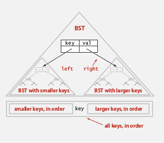
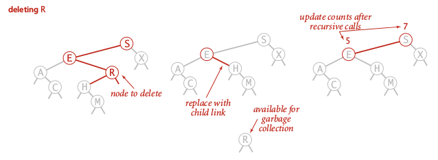

(BST是锻炼递归代码的好题目)
1. Binary Search Trees
def. BST
A binary tree where each node has a key:
for every node, the key is larger than all nodes in left subtree, smaller than all nodes in right subtree.

Fields: key, val, left, right
Implementation
An inner class of BST nodes:
private class Node{
private Key key;
private Value val;
private Node left, right;
public Node(Key k, Value v){...}
}
skeleton implementation of BST:
public class BST<Key implements Comparable<Key>, Value>{
private Node root;
private class Node{...}
public Value get(Key k){...}
public void put(Key k, Value v){}
public void delete(Key k){}
public Iterable<Key> iterator(){}
}
search
recursive version:
(或者把这个函数写到Node类里面也可以. )
private Value get(Node nd, Key k){
if(nd==null) return null; // search miss
int cmp = k.compareTo(nd.key);
if(cmp==0) return nd.val; // search hit
else if (cmp>0) return get(nd.right, k);
else return get(nd.left, k);
}
non-recursive version:
public Value get(Key k){
Node nd=root;
while(root!=null){
int cmp = k.compareTo(nd.key);
if (cmp==0) return nd.val;
else if(cmp>0) nd = nd.right;
else nd = nd.left;
}
return null;
}
insert
recursive version:
(注意这个recursive函数的返回值不是void! 这里是一个trick: 返回的是在分叉以前的那个节点)
private Node put(Node nd, Key k, Value v){
if(nd==null) return new Node(k, v);
int cmp = k.compareTo(nd.key);
if(cmp==0) nd.val = v;
else if(cmp>0) nd.right = put(nd.right, k, v);
else nd.left = put(nd.left, k, v);
return nd;
}
non-recursive version:
不如递归版本优美...
public void put(Key k, Value v){
Node nd = root;
while(true){
int cmp = k.compareTo(nd.key);
if(cmp==0) {
nd.val = v; break;
}
else if(cmp>0){
if(nd.right!=null) nd = nd.right;
else {nd.right = new Node(k,v); break;}
}
else if (nd.left!=null) {
if(nd.left!=null) nd = nd.left;
else {nd.left = new Node(k,v); break;}
}
}
}
Analysis
complexity: depth of the BST.
shape of BST: depends on how the keys come in (order of insertion).

if keys come in random order: could be pretty well balanced.
BST and quick-sort partitionning
The root of BST is just the pivot in quick sort partitioning *
if all keys are distinct ⇒ one-to-one correspondence between quick sort and BST.
⇒ proposition
if all keys are distinct and come in randome order, the average number of compares for a search/insert is ~2lnN (or 1.39lgN).
proof.*
证明见quicksort那里的数学推导...
proposition (Reed, 2003)
N distinct keys come in random order, average tree height = 4.300lnN
Worst-case:
The tree becomes just like a linked list: ~N for insertion and search
2. Oredered Operations in BST
task: ordered opeartions
min()/max(): min/max keydeleteMin()/deleteMax()floor(Key k)/ceiling(Key k): largest key <=k / smallest key >=krank(Key k): nb of keys < keyselect(int i): key with rank=iIterator<Key> keys(lo, hi): iterates through [lo, hi]
min/max
easy
min: left-most
max: right-most

floor/ceiling
a little more complexed...
floor (ceiling is similar)
- if k==nd.key
return nd.val
- if k<nd.key
the floor must be in the left subtree
- if k>nd.key
- 如果min(nd.right) > k: 返回nd.val
- 如果min(nd.right) <= k: go to right
public Value floor(Node nd, Key k){// largest element with key <= k int cmp = k.compareTo(nd.key); if(cmp==0) return nd.val;//case 1 else if(cmp<0) return floor(nd.left, k);//case 2 if (nd.right==null || min(nd.right).compareTo(k)>0) //case 3 return nd.val; else return floor(nd.right); }
他提供的版本和我写的不一样: 递归函数floor返回的也是一个Node:
rank/select
In each node, store the number of nodes in the subtree: add an extra field.
size
private class Node{
private int count;
//...
}
public int size(){
return size(root);
}
public int size(Node nd){
if(nd==null) return 0;// this is why we do not put size() inside the class Node!
return nd.count;
}
public void put(Node nd, Key k, Value v){
//.....
nd.count = size(nd.left)+size(nd.right)+1;//maintain count for each node
return nd;
}
rank
(return nb of keys < k)
- if nd.key==k
return size(nd.left)
- if nd.key>k
return rank(nd.left, k)
- if nd.key<k
return size(nd.left)+1+rank(nd,right, k)
private int rank(Node nd, Key k){
if(nd==null) return 0;//remember null case
int cmp = k.compareTo(nd.key);
if(cmp==0) return size(nd.left)
else if (cmp<0) return rank(nd.left, k);
else return size(nd.left)+1+rank(nd.right,k);
}
select() similar...
iteration
Inorder traversal 中序遍历
public Iterable<Key> keys(){
Queue<Key> q = new Queue<Key>();
inorder(root, q);
return q;
}
private void inorder(Node nd, Queue<Key> q){
if(nd==null) return;
inorder(nd.left);
q.enqueue(nd.key);
inorder(nd.right);
}

property
inorder-traversal gives the keys in ascending order.
(proof by induction)
3. Deletions in BST
one final function to implement: delete(Key k), deleteMin(), deleteMax()
→ and remember to update the count field...
(感觉这篇文章其实就讲的很清楚了: http://www.algolist.net/Data_structures/Binary_search_tree/Removal 这个在递归函数里使用了parent这个参数)
lazy approch
put(k, null), and leave the key in the tree (tombstone)
→ not good if have large number of tombstons...
deleteMin/Max
go the the left-most node → replace it with its right node.
Recusive function with the returning-node trick:
private Node deleteMin(Node nd){
if(nd==null) return null; // this might not happen
if(nd.left==null) return nd.right;
else nd.left = deleteMin(nd.left);
nd.count = size(nd.left)+1+size(right);//remember to maintain the count field
return nd;
}
这个递归的技巧又一次使用了.
Hibbard deletion
first find node with the key to delete, 3 cases:
- 0 children:
simply set parent link to null

- 1 child:
replace parent link with the child

- 2 children (most subtle)
- first replace node key with smallest key in right subtree
- remove the smallest key in right subtree

code of Hibbard deletion
Again (for the 3rd time) use the return-nd trick...
private Node delete(Node nd, Key k){
if(nd==null) return null;// search miss
int cmp = k.compareTo(nd.key);
if(cmp>0) nd.right = delete(nd.right, k);
else if(cmp<0) nd.left = delete(nd.left,k);
else{
//if nd is the node to delete
if(nd.left==null) return nd.right;
if(nd.right==null) return nd.left;
Key k2 = min(nd.right);
nd.key = k2;
nd.right = delete(nd.right, k2);
}
nd.count = size(nd.left)+1+size(nd.right);
return nd;
}
public void delete(Key k){
root = delete(root, k);
}
感觉用了recursive return-nd 这个trick的实现很漂亮.... 比那篇博客里放一个参数进递归函数以及用auxroot的办法要好不少...
Analysis
problem: not symmetric
If random insert and delete for a while ⇒ tree become much less balanced ! Tree height tend to be sqrt(N).
summery
BST is much better in average case, but not guaranteed for worst case.
Part 10 of series «Algorithms Princeton MOOC I»：
- [Algorithms I] Week 1-1 Union-Find
- [Algorithms I] Week 1-2 Analysis of Algorithms
- [Algorithms I] Week1-Lab: Percolation
- [Algorithms I] Week 2-1 Stacks and Queues
- [Algorithms I] Week 2-2 Elementary Sorts
- [Algorithms I] Week 3-1 Mergesort
- [Algorithms I] Week 3-2 Quicksort
- [Algorithms I] Week 4-1 Priority Queue
- [Algorithms I] Week 4-2a Elementry Symbol Tables
- [Algorithms I] Week 4-2b Binary Search Trees
- [Algorithms I] Week 5-1 Balanced Search Trees
- [Algorithms I] Week 5-2 Geometric Applications of BSTs
- [Algorithms I] Week 6 Hash Tables
Disqus 留言